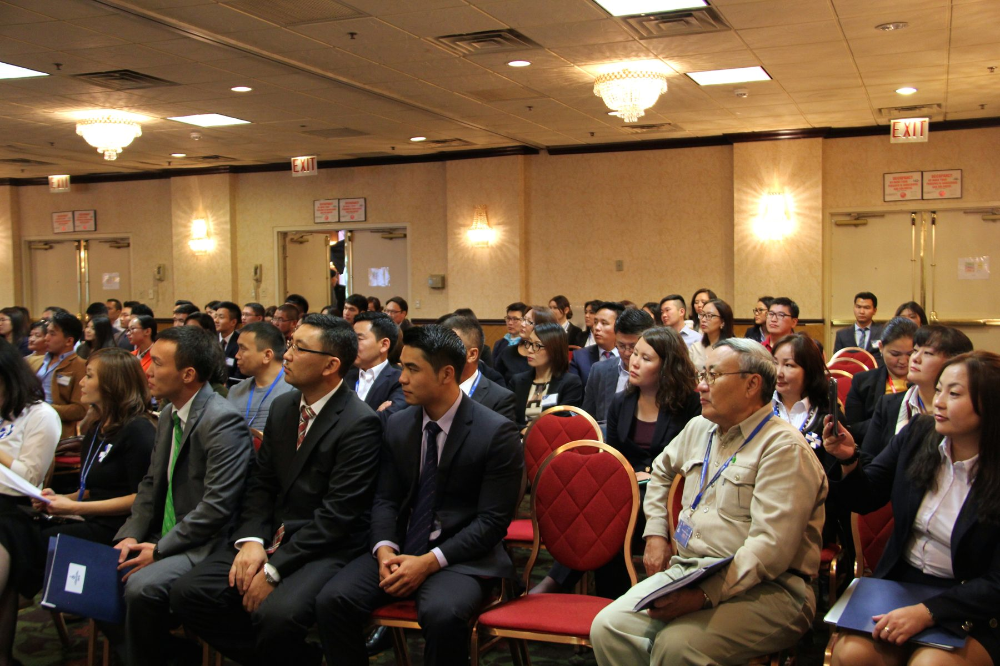

B
Founding team
Batchimeg Ganbaatar
Founding member · "from day one" in 2014
Five Mongolians from four continents put on a career fair to connect Mongolian students in the U.S. with companies that would actually hire them. Nobody knew it would still be running twelve years later.
Chicago · MACF I · five founders · four continents.
The Mongolian American Career Fair (MACF) in 2014 was simple in form and ambitious in intent: bring recruiters from top U.S. and Mongolian companies face-to-face with Mongolian students who needed a foot in the door, and let them talk to each other. Tuya, the finance lead who organized that first fair, is still on the team.
Everything that followed, the merger with NHUB in 2016, the cross-country city rotation, the full three-day summit format, grew out of this single event. We're still collecting historical materials from this year. If you attended, organized, exhibited, or have photos, send them in.
Year zero. Chicago. The first Mongolian American Career Fair was a single-day event organized by a small founding team who decided that the next generation of Mongolian-Americans needed a place to find each other and the employers who'd hire them. Programming details from 2014 are mostly oral history at this point, we're rebuilding the record from photos and survey responses.
One day. One venue. A keynote, an employer-recruiter panel, mock interviews, and the first time most of the room had been together as Mongolians-in-America in a professional context. The program was deliberately simple, built to test whether the community would show up. It did.
2014 Chicago program is mostly oral history at this point. If you attended, organized, exhibited, or photographed: archive@mngsummit.org.
The first Mongolian American Career Fair was a small, single-day event organized by a founding team in Chicago. The original speaker list survives mostly in attendees' memories, we're rebuilding it from photos and recollections.
Chicago · 2014 · 1st Mongolian American Career Fair. The seed event. The room shown here was where the next decade's network started.

Names, photos, programs, stories, anything you have.